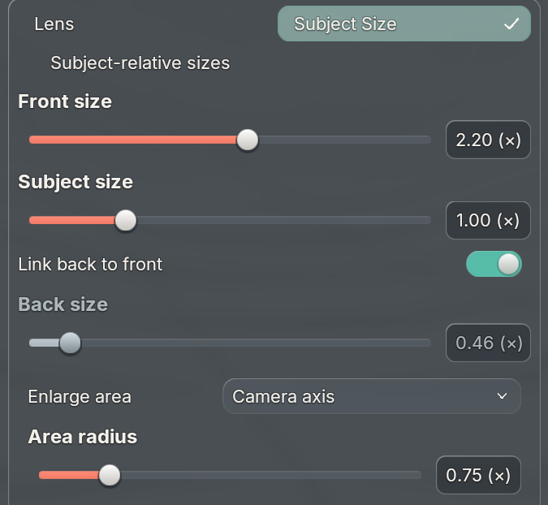

The reciprocal link makes Front 2× produce Back 0.5×, with a 4× upper limit. Your independent Back size is retained while linked. Subject size adjusts the focus/head region independently.
0–5 s: linked front/back. 5–10 s: independent front, then back. 10–15 s: independent head region. Camera-axis falloff stays on throughout. These are actual Blender captures replayed at 8 fps; this is not a viewport performance benchmark.

Seven native/BUI fixtures pass across macOS Blender 4.2.23–5.2.2, plus 31 focused BUI tests. The shared binding fix displays valid read-only RNA while continuing to reject writes. Native property/context ownership and stale-owner checks remain intact. Installed code matches source; the live scene was not saved. Physical Windows replay remains pending.